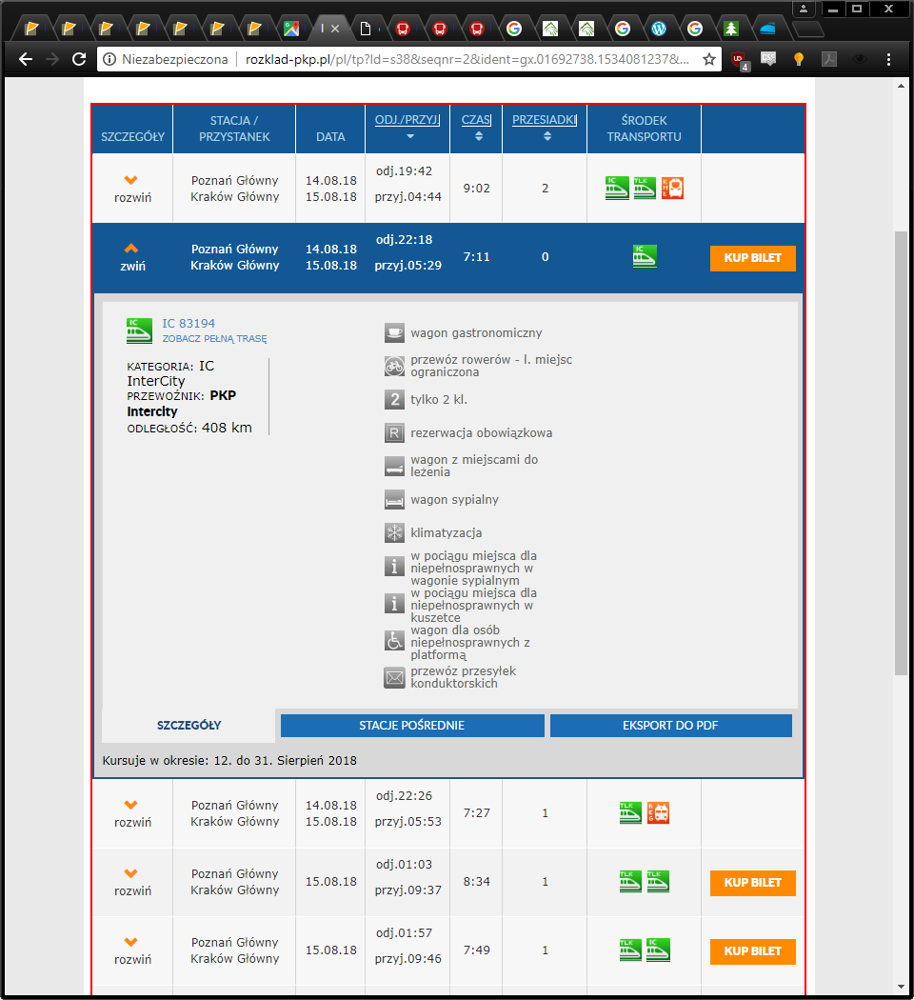
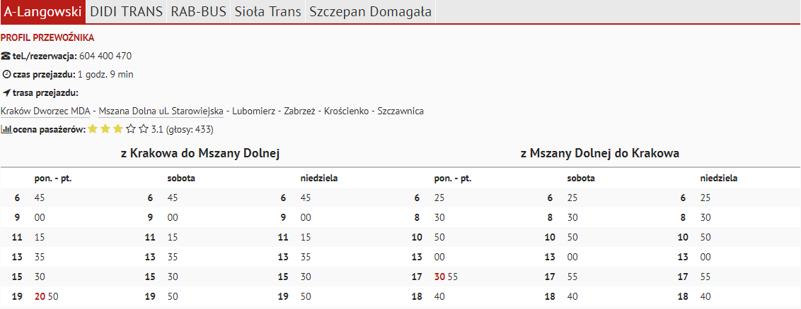
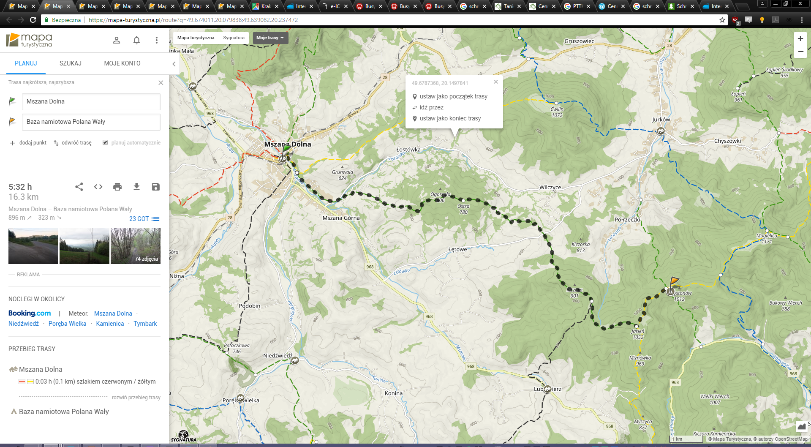
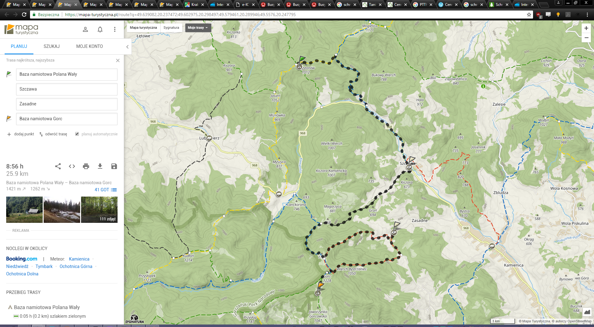
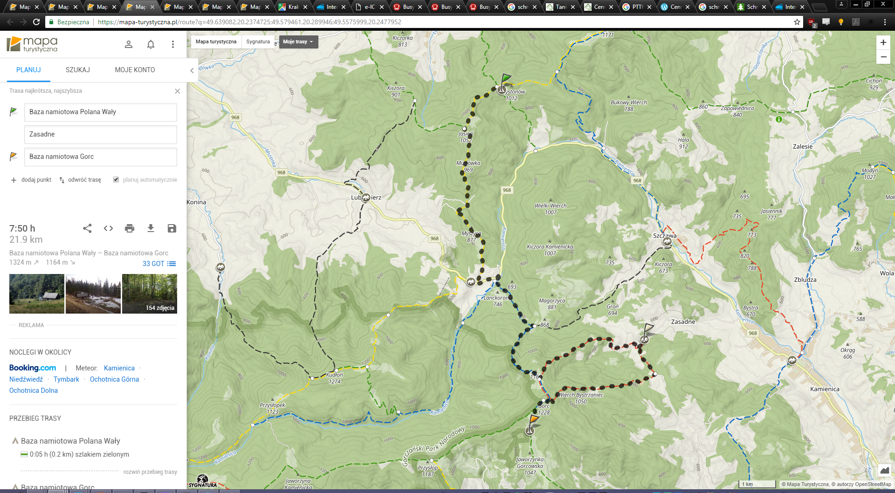
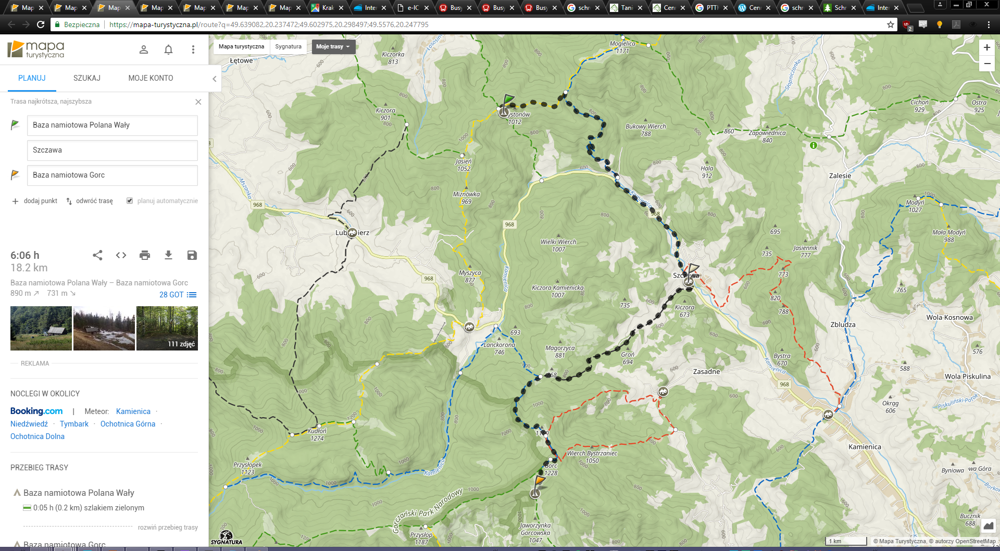
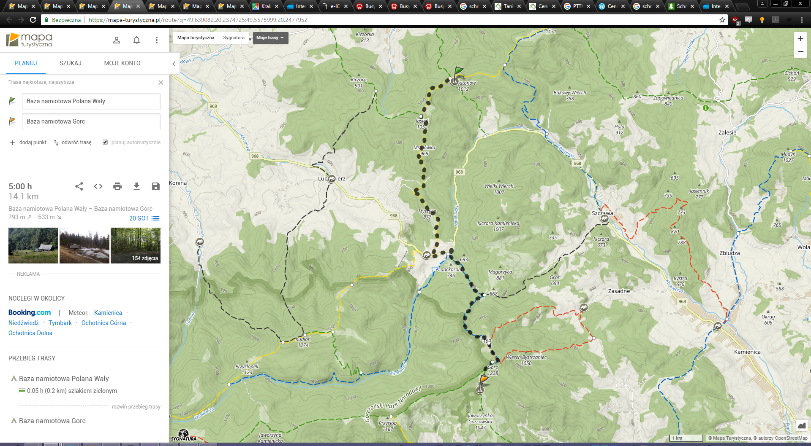

Pierwsza część:
wtorek 22.18 - środa 5.29
pocionk IC 83194

Druga część:
6:45-7:54 autobus do Mszany Dolnej
chyba około 10zł
będzie dość czasu więc możemy znaleźć coś lepszego
W Mszanie Dolnej chiałbym iść na Mszę:
6:30, 8:00, 9:30, 11:00, 15:00, 18:00 (VII-VIII o 19:00)
MSZE
Mszana Dolna do Baza namoitowa Polana Wały
5:32h
16.3km
up: 896m
down: 323m
7 zł za nocleg
LINK
4 opcje
retardowo długa (jako upgrade długiej):
8:56h
25.9km
up: 1421m
down: 1262m
LINK
retardowo długa (jako upgrade krótkiej):
7:50h
21.9km
up: 1324m
down: 1164m
LINK
dłuższa (początek dla przedłużenia):
6:06h
18.2km
up: 890m
down: 731m
LINK
krótsza:
5:00h
14.1km
up: 793m
down: 633m
5 zł za nocleg
LINK
2 opcje: